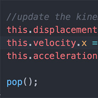

Simulations for science education have been around for decades. Traditionally, the coding skills required were just out of reach for beginning students. Not so anymore. Using elementary javascript, we can code basic to advanced sims that show interesting science without having to spend years learning software development.

Books are great. There's no denying that. However, so are motion graphics! We can make abstract science concepts visual by coding up simple simulations. Our forthcoming science.js library will make it easy for students and coders everywhere to build their own sims.
{{ post.content | strip_html | truncatewords: 50 }}
Read moresubscribe via RSS
Many existing simulation collections suffer from the common blight of stagnation. They are built with old technology (flash or java applets) by old people (no offense intended, but programming is a young person's game!). The often look dated (like 90's video games), don't work on modern devices, and fail to communicate the fundamentals of the science to the students using them. These sims are fresh - built by students using modern javascript libraries. Sure, one day, they too will be old - but that day is not today!